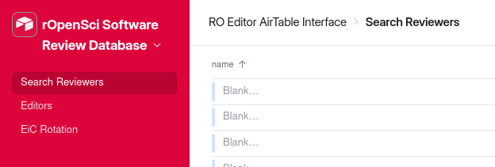

A revisão por pares de software na rOpenSci é gerenciada por uma equipe de editores. Estamos testando um sistema rotativo de Editor-Chefe (do inglês EiC).
Este capítulo apresenta as responsabilidades do [Editor-Chefe] (#eicchecklist), e de [qualquer editor responsável por uma submissão] (#editorchecklist), e sobre [como responder a uma submissão fora do escopo] (#outofscoperesponse), e também sobre [como gerenciar o lançamento de um guia de desenvolvimento] (#bookrelease).
Se você for um editor convidado, obrigado por ajudar! Entre em contato com o editor que o convidou para lidar com uma submissão para esclarecer qualquer dúvida que você possa ter.
Sempre presuma que os participantes do sistema de revisão de software (colegas editores, quem envia submissões, revisores) estão fazendo o melhor que podem e que se comunicam adequadamente, especialmente ao perguntar por que algo está atrasado.
8.1 Responsabilidades dos editores
Além de lidar com pacotes (cerca de 4 por ano), editores participam das decisões editoriais do grupo, como, por exemplo, se um pacote está dentro do escopo e determinam atualizações em nossas políticas. Geralmente, fazemos isso por meio do Slack, que esperamos que os editores possam verificar regularmente.
Também fazemos um rodízio de responsabilidades do Editor-Chefe (decisões de escopo de primeira instância e designação de editores) entre a diretoria trimestralmente.
Você não precisa acompanhar outras submissões, mas se notar um problema com um pacote que está sendo tratado por outro editor, sinta-se à vontade para levantar esse problema diretamente com o outro editor ou publicar sua observação no canal de editores no Slack. Exemplos:
Você sabe de um pacote que já resolve as mesmas dores/desafios de outro(s) pacote(s), que ainda não foi mencionado no processo.
Você vê uma pergunta para a qual uma resposta especializada não foi dada depois de alguns dias (e.g., você sabe de uma publicação num blog que aborda como adicionar imagens a documentação de pacotes).
Preocupações relacionadas à velocidade do processo devem ser tratadas pelo Editor-Chefe, portanto, é a ele que você recorreria para tais perguntas.
8.2 Como lidar com a lista de verificação do editor
8.2.1 No momento do envio:
Se você for o EiC ou o primeiro editor a responder, designe um editor com um comentário @ropensci-review-bot assign @username as editor. Isso também adicionará a tag1/editor-checks ao problema da edição (issue).
Para submissões estatísticas (identificadas como “Submission Type: Stats” no modelo da issue), adicione o rótulo “stats” à edição.
Uma submissão gerará automaticamente um relatório de verificação de pacote do ropensci-review-bot, que deve ser examinado para identificar se há problemas pendentes (a maioria das exceções deverá ser justificada pelo autor no contexto específico do seu pacote). Se você quiser executar novamente as verificações após qualquer alteração no pacote, poste o comentário @ropensci-review-bot check package.
O sistema de verificação é reconstruído todas terças-feiras às 00:01 UTC, podendo levar algumas horas. Se verificações automáticas falharem nesse horário, aguarde algumas horas e tente novamente.
Depois que as verificações automáticas forem lançadas, use o modelo de editor para orientar as verificações iniciais e registrar sua resposta a submissão. Você também pode simplificar suas verificações de editor usando a função pkgreviewr pacote criado pela editora associada Anna Krystalli. Por favor, tente concluir as verificações e começe a procurar revisores dentro de 5 dias úteis.
Verifique se o modelo foi preenchido corretamente.
Verifique as políticas em busca de possíveis ajustes e sobreposições. Se necessário, inicie uma discussão por meio do canal #software-review do Slack para casos extremos que não tenham sido detectados por verificações anteriores do EiC. Se houver rejeições, consulte esta seção sobre como responder.
Verifique se as partes obrigatórias do modelo estão completas. Caso contrário, oriente os autores para as instruções apropriadas.
Para pacotes que precisam de integração contínua em várias plataformas (cf critérios nesta seção do capítulo sobre CI), certifique-se de que o pacote seja testado em várias plataformas (tendo o pacote criado em vários sistemas operacionais por meio do GitHub Actions, por exemplo).
O ideal é que você faça observações e estas sejam resolvidas antes que revisores comecem a revisar.
Se as verificações iniciais mostrarem grandes lacunas, solicite alterações antes de designar os revisores. Se o autor mencionar que as alterações podem levar tempo, aplique o rótulo de retenção digitando @ropensci-review-bot put on hold. Você receberá um lembrete a cada 90 dias (na issue) para verificar com o(s) autor(es) do pacote.
Se o pacote levantar um novo problema para a política de uso da rOpenSci, inicie uma conversa no Slack ou abra uma discussão na seção fórum da rOpenSci para discutí-lo com outros editores (exemplo de discussão de política).
8.2.2 Procure e designe dois revisores:
8.2.2.1 Tarefas
Comente com @ropensci-review-bot seeking reviewers.
Use o modelo de e-mail se necessário, para convidar revisores. Ao convidar revisores, inclua algo como “se eu não tiver notícias suas em uma semana, presumirei que você não poderá fazer uma revisão”, para dar um prazo claro no qual você irá procurar outra pessoa.
Designe revisores com @ropensci-review-bot assign @username as reviewer. Em vez de assign, add também pode ser usado, assim como to reviewers (plural) em vez de as reviewer (singular). Portanto, o seguinte também é válido: @ropensci-review-bot add @username to reviewers. Um comando deve ser emitido para cada revisor. Se necessário posteriormente, remova revisores com @ropensci-review-bot remove @username from reviewers.
Se você quiser alterar a data de vencimento de uma revisão, use @ropensci-review-bot set due date for @username to YYYY-MM-DD.
8.2.2.2 Como procurar revisores
8.2.2.2.1 Onde procurar revisores?
Como editor (convidado), use
as possíveis sugestões feitas por quem envia submissões, (embora estes possam ter uma visão limitada dos tipos de especialização necessários; sugerimos que você não use mais de um dos revisores sugeridos).
o banco de dados Airtable de revisores e voluntários (consulte a próxima subseção).
Quando essas fontes de informação não forem suficientes,
peça ideias a outros editores no Slack.
procure usuários do pacote ou da fonte de dados/serviço de upstream ao qual o pacote se conecta (por meio das issues abertas no repositório, marcando-o com uma estrela, citando-o em artigos, falando sobre ele na plataforma X).
Você também pode procurar por autores de pacotes relacionados em r-pkg.org.
R-Ladies tem um diretório especificando as habilidades e os interesses das pessoas listadas.
Você pode publicar uma solicitação de revisores nos canais #general e/ou #software-review no Slack da rOpenSci ou nas mídias sociais.
8.2.2.2.2 Dicas para a pesquisa de revisores no Airtable
Você pode usar filtros, classificações e pesquisas para identificar revisores com experiência específica:

Captura de tela da interface em inglês de filtros do Airtable com um filtro de experiência de domínio que deve incluir química e áreas técnicas que devem incluir integração contínua
Por favor, verifique a avaliação mais recente do revisor(a) e evite qualquer pessoa que tenha avaliado alguém nos últimos seis meses. Além disso, verifique se um revisor(a) iniciante indicou que precisou de mentoria (require_mentorship). Nestes casos, use a parte de orientação do modelo de e-mail e esteja preparado para fornecer orientações adicionais.
8.2.2.2.3 Critérios para escolher um revisor
Aqui estão os critérios que você deve ter em mente ao escolher um revisor. Talvez você precise reunir essas informações pesquisando no CRAN e na página do GitHub do possível revisor e em sua presença online em geral (site pessoal, X).
Revisou um pacote para nós nos últimos 6 meses.
Tem alguma experiência em desenvolvimento de pacotes.
Tem alguma experiência de domínio no campo do pacote ou da fonte de dados.
Tente equilibrar sua percepção da experiência do possível revisor com a complexidade do pacote.
Diversidade - com dois revisores, ambos não devem ser homens brancos cis.
Há evidências de que o possível revisor esteja aberto a opiniões e interessado em atividades da comunidade de R, embora não tenha problema em enviar e-mails frios.
Cada submissão deve ser revisada por dois revisores de pacotes. Embora seja aceitável que um deles tenha menos experiência em desenvolvimento de pacotes e mais conhecimento do domínio, a revisão não deve ser dividida em dois. Ambos os revisores precisam revisar o pacote de forma abrangente, embora sob suas perspectivas específicas. Em geral, pelo menos um revisor deve ter experiência prévia em revisão e, é claro, convidar um novo revisor amplia nosso grupo de revisores.
8.2.3 Durante a revisão:
Verifique ocasionalmente com os revisores e autores. Ofereça esclarecimentos e ajuda conforme necessário.
Em geral, procure calcular 3 semanas para uma revisão, 2 semanas para as alterações subsequentes e 1 semana para a aprovação das alterações pelo revisor.
Após o envio de cada revisão,
Escreva um comentário agradecendo ao revisor;
Registre a revisão digitando um novo comentário @ropensci-review-bot submit review <review-url> time <time in hours>. Por exemplo, para a revisão https://github.com/ropensci/software-review/issues/329#issuecomment-809783937 o comentário seria @ropensci-review-bot submit review https://github.com/ropensci/software-review/issues/329#issuecomment-809783937 time 4.
Se o autor deixar de responder, consulte as políticas de uso e/ou envie um ping para os outros editores no canal de discussão do Slack. É importante ressaltar que, se um revisor tiver sido atribuído a um issue fechado, entre em contato com ele ao fechar o issue para explicar a decisão, agradeça-o mais uma vez por seu trabalho e faça uma anotação em nosso banco de dados para atribuí-lo a uma submissão com grandes chances de um processo de revisão de software mais tranquilo da próxima vez (por exemplo, de um autor de pacote que já tenha enviado pacotes para nós anteriormente).
Quando as alterações forem feitas, altere a tag de status da revisão para 5/awaiting-reviewer-response e solicite que os revisores indiquem a aprovação usando o modelo de aprovação do revisor.
Se as pessoas autoras tiverem a intenção de enviar um manuscrito de acompanhamento do tipo Applications no periódico Methods in Ecology and Evolution, indique que o envio do manuscrito pode ser feito após a conclusão da revisão.
8.2.4 Após a revisão:
@ropensci-review-bot approve <package-name>.
Se o proprietário original do repositório se opuser à transferência, adicione uma linha com seu endereço para esta lista de repositórios para garantir que o pacote seja incluído no registro de pacotes da rOpenSci.
Indique um pacote para ser apresentado em uma postagem de blog ou nota técnica da rOpenSci se você achar que ele pode ser de grande interesse. Observe na edição de revisão do software uma ou duas coisas que o autor poderia destacar e marque @ropensci/blog-editors para que você possa dar acompanhamento.
Se os autores mantiverem um gitbook que seja, pelo menos em parte, sobre seu pacote, entre em contato com um membro da equipe da rOpenSci para que este possa falar com os autores sobre a questão de transferência para a organização ropensci-books no GitHub. #### Pacotes que permanecem nas organizações originais do GitHub
Para autores de pacotes que desejam manter seus repositórios em suas organizações originais do GitHub, em vez de transferi-los para github.com/ropensci, os editores devem:
Pedir aos autores de pacotes que façam um pull request para o arquivo JSON que lista todos os repositórios que não foram transferidos. Exemplo de commit.
O EiC atua por 3 meses ou por um período combinado por todos os membros do conselho editorial. O EiC tem o direito de tomar decisões sobre escopo e sobreposição da forma mais independente possível (mas ainda pode solicitar ajuda/conselho). Em detalhe, o EiC desempenha as seguintes funções
Observa todas as issues postadas no repositório de revisão do software (tanto assina as notificações do repositório no GitHub ou observa o canal #software-peer-review-feed no Slack).
Deve marcar toda nova submissão completa com 0/editorial-team-prep
Requere @ropensci-review-bot check srr sobre solicitações de pré-submissão de software estatístico. Veja o capítulo do Stats Dev Guide, para mais detalhes.
Atribui submissões de pacotes a outros editores, inclusive a si mesmo, para que cuidem delas. Na maioria das vezes, isso é uma forma de rodízio entre os editores, a menos que o EiC considere que um editor seja particularmente adequado para um pacote ou que um editor se recuse a lidar com a submissão por estar muito ocupado ou por causa de conflito de interesse. Para isso, use
@ropensci-review-bot assign @username as editor
Monitora regularmente (por exemplo, semanalmente) o ritmo do processo de revisão graças ao devguider e lembra outros editores de mover os pacotes conforme necessário.
Ao assumir a rotação do EiC, revisa o status das revisões abertas atuais graças ao devguider e lembra os editores de responderem ou atualizarem o status conforme necessário.
Responde a issues postadas no repositório software-review-meta.
Toma decisões sobre escopo/sobreposição para consultas de pré-submissão, referências do JOSS ou de outros parceiros de publicação e submissões, se encontrar um caso ambíguo (este último caso também pode ser feito por editores em ação, veja abaixo). Para iniciar discussão, isso é postado no canal exclusivo para editores do Slack da rOpenSci, juntamente com um pequeno resumo do que se trata a submissão (pré-)submetida/referida, quais dúvidas o EiC tem, ou seja, digerindo um pouco as informações. Se, depois de um ou dois dias, o EiC achar que não recebeu respostas suficientes, ele poderá fazer um ping em todos os editores.
Qualquer editor deve se sentir à vontade para intervir nesses casos. Veja esta seção sobre como responder a (pré-)subbmissões fora do escopo.
Depois de explicar a decisão fora do escopo, escreva um comentário sobre a issue com @ropensci-review-bot out-of-scope.
Solicite um novo EiC quando sua rotação terminar (defina um lembrete no calendário antes da data prevista para o término e peça voluntários no canal Slack dos editores)
8.3.1 Usando devguider::devguide_eic_report()
Instale o devguider e execute devguider::devguide_eic_report(). Abra o relatório HTML em um navegador.
Examine as submissões em “presubmission” (pré-submissão) e “editorial-team-prep” (preparação da equipe editorial). Verifique se alguma ação precisa ser tomada (sondar editores, tomar uma decisão, colocar a issue em espera, enviar um ping a pessoa que submeteu a proposta para uma atualização, encontrar e designar um editor).
As linhas em cada seção são coloridas por nível de “urgência”, de branco (ignorar) a amarelo (não urgente) e vermelho (mais urgente).
Examine as submissões em “seeking-reviewer(s)”. Se a busca de avaliadores estiver sendo realizada há muito tempo (cor vermelha), verifique se a submissão está em espera, leia o tópico para obter o contexto e entre em contato com o editor em particular para solicitar mais informações/se a submissão passou despercebida.
Examine as submissões em “reviewer(s)-assigne”. Se ainda faltarem revisões após um período de tempo excepcionalmente longo (cor vermelha), verifique se a submissão está em espera, leia o tópico para obter o contexto e entre em contato com o editor em particular para solicitar mais informações/se a submissão foi ignorada.
Examine as submissões em “review(s)-in-awaiting-changes”. Se algumas ainda não tiverem uma resposta do autor após um tempo excepcionalmente longo (cor vermelha), verifique se a submissão está em espera, leia o tópico e entre em contato com o editor em particular para pedir mais informações/se a submissão foi ignorada.
8.3.2 Solicitando mais detalhes
Em alguns casos, a documentação online é escassa. LEIAME simplificado e ausência de um site pkgdown dificultam a avaliação. Nesse caso, solicite mais detalhes; mesmo que o pacote seja considerado fora do escopo, a documentação do pacote terá melhorado, portanto, não há problema em adotar esses esforços.
Exemplo de texto
Olá <usuário> e muito obrigado por sua submissão.Estamos discutindo se o pacote está dentro do escopo e precisamos de um pouco mais de informações.Você se importaria de acrescentar mais detalhes e contexto ao LEIAME? Depois de lê-lo, alguém com pouco conhecimento do domínio deve ter sido informado sobre o objetivo, as metas e a funcionalidade do pacote.<opcional>Se um pacote tiver sobreposição de funcionalidade com outros pacotes, exigimos que ele seja demonstrado na documentação [como é o melhor da categoria](https://devguide.ropensci.org/policies.html#overlap). Você poderia adicionar uma comparação mais detalhada com os pacotes que mencionou no LEIAME para que possamos avaliar?</opcional>
8.3.3 Convidando um editor convidado
Depois de discutir com outros editores, o EiC pode convidar um editor convidado para lidar com uma submissão (e.g., se o volume de submissões for grande, se todos os editores tiverem um conflito de interesses, se conhecimento específico for necessário ou como um teste antes de convidar uma pessoa para fazer parte do conselho editorial).
Convide-a para a equipe ropensci/editors e para a organização rOpenSci.
Depois que ela aceitar o convite do repositório, atribua a issue a ela.
Certifique-se de que ela (já) esteja convidada para o espaço de trabalho do Slack da rOpenSci.
Adicione o nome dela a tabela de editores convidados do Airtable (para que seu nome possa aparecer neste livro e no LEIAME da revisão de software).
Depois que o processo de revisão for concluído (pacote aprovado, issue fechada),
Agradeça novamente ao editor convidado.
Remova-o da equipe ropensci/editors (mas não da organização rOpenSci).
8.4 Respondendo a submissões fora do escopo
Agradeça aos autores pela submissão, explique os motivos da decisão e direcione-os a outros locais de publicação, se relevante, e ao fórum de discussão rOpenSci. Use sugestões de texto de Objetivos e escopo especialmente em relação à evolução do escopo ao longo do tempo e à sobreposição e às diferenças entre o desenvolvimento da unconf/staff/software-review.
Revisores podem pedir feedback sobre, por exemplo, o tom de suas avaliações. Além de indicar as orientações gerais deste guia, você pode fazer perguntas aos editores ou abrir issues quando essa orientação estiver faltando. Aqui seguem alguns exemplos de avaliação que podem ser úteis.
o pacote slopes que acabou sendo fundamentalmente redesenhado em resposta a revisões. Todas as revisões/revisores foram sempre totalmente construtivos, o que parece ter desempenhado um papel importante na motivação dos autores para embarcar numa grande reformulação. Comentários como, “este pacote não …” ou “não tem …” foram seguidos de sugestões construtivas sobre o que poderia ser feito (há, por exemplo, vários casos em uma das primeiras revisões).
Para alterações muito pequenas no guia de desenvolvimento, não é necessária fazer revisão de pull request (PR). Para alterações maiores, solicite a revisão de pelo menos alguns editores (se nenhum deles participou da discussão relacionada à alteração, solicite uma revisão de todos eles no GitHub e, na ausência de qualquer reação, faça o merge após 1 semana).
Duas semanas antes do lançamento de um guia de desenvolvimento, uma vez que o PR do dev para o mastere a postagem do blog de lançamento estiverem prontos para revisão, todos os editores devem receber um ping no GitHub (“solicitação de revisão” no PR de dev para master) e do Slack, mas o lançamento não precisa que todos eles aprovem explicitamente o lançamento.
8.6.2 Postagem no blog sobre um lançamento
A postagem no blog sobre um lançamento será revisada por editores e um dos @ropensci/blog-editors.
A postagem no blog deve mencionar todos os itens importantes do changelog, organizados em (sub)seções: e.g., uma seção sobre uma grande mudança A, outra sobre uma grande mudança B e uma sobre as mudanças menores agrupadas. Mencione as alterações mais importantes primeiro.
Para cada alteração feita por um colaborador externo, agradeça-o explicitamente usando as informações do changelog. Por exemplo, [Matt Fidler](https://github.com/mattfidler/) modificou nossa seção sobre mensagens de console [ropensci/dev_guide#178](https://github.com/ropensci/dev_guide/pull/178).
No final da postagem, mencione as próximas alterações vinculando-as a problemas abertos no rastreador de problemas e convide os leitores a contribuir com o guia de desenvolvimento abrindo issues e participando de discussões abertas. Modelo de conclusão:
Nesta postagem, resumimos as alterações incorporadas em nosso livro [“rOpenSci Packages: Development, Maintenance, and Peer Review”] (https://devguide.ropensci.org/) nos últimos X meses. Somos gratos por todas as contribuições que tornaram possível esse lançamento. Já estamos trabalhando em atualizações para a nossa próxima versão, como _issue1_, _issue2_. Confira o [issue tracker] (https://github.com/ropensci/dev_guide/issues/) se você quiser contribuir.
8.6.2.2 Autoria
O editor que está escrevendo a postagem é o primeiro autor, os outros editores estão listados em ordem alfabética.